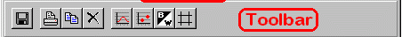
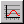
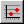

Toolbar
Tabs
Series Tab
Graph Tab

Menubar
The menubar allows for manipulation and recording of the graph. The menu items are:- File
- Export Data to...
- Exports the graph data to an ASCII data file chosen by the user, with model parameters and plotted statistics in columns separated by tab characters. If the file exists the user has the option of overwriting or appending to it.
- Close Window
- Hides the Time Series form.
- Graph
- Prints the current graph to the default printer.
- Copy
- Copies the current graph to the clipboard as a scalable picture (Windows metafile).
- Clear
- Clears the graph data.
- Draw Lines
- Toggles drawing the data series with lines joining the points.
- Draw Points
- Toggles drawing points on the graph. (For large datasets this significantly slows the framerate.)
- Monochrome
- Toggles between drawing the series in monochrome (with different line styles) or colour. Monochrome may be more suitable for printing.
- Grid
- Toggles drawing of background grid on the graph.
- Help
- Export Data Button
- Same as File|Export Data to... menu item.
- Print Button
- Same as Graph|Print menu item.
- Copy Button
- Same as Graph|Copy menu item.
- Clear Button
- Same as Graph|Clear menu item.
-  Draw Lines Button
- Same as Graph|Draw Lines menu item.
-  Draw Points Button
- Same as Graph|Draw Points menu item.
- Monochrome Button
- Same as Graph|Monochrome menu item.
- Draw Grid Button
- Same as Graph|Grid menu item.
- Add Series Button
- Add a pair from the Operation/State listboxes to the Series listbox for plotting. One item must be selected from each of the Operation and State listboxes. The program allows up to ten series to be plotted.
- Remove Series Button
- Remove a series from the Series listbox and the graph. An item must be selected from the Series listbox before pressing this button.
- Minimum
- Maximum
- Average
- Maximum
- These operations calculate the minimum/maximum/average of the specified state computed over all agents.
- Variance
- Calculates the variance of the dataset using the corrected two-pass algorithm . The standard deviation is the square root of the variance. This and the other higher moments reduce the simulation framerate.
- Skewness
- Calculates the lopsidedness of the dataset (third moment). Returns a negative (positive) value if the tail of the distribution is left- (right-) biased. The value is significant if its magnitude exceeds sqrt(15/N) where N is the number of agents.
- Kurtosis
- Calculates the excess weight in the tails of the dataset (fourth moment). A positive (negative) value indicates an excess (deficiency) of large outliers compared to a Gaussian distribution. The value is significant at a magnitude of sqrt(96/N) where N is the number of agents.
- Parameter
- This item lets you plot the time evolution of a global model parameter, instead of statistics of the agent state variables. When this item is selected the State Listbox contains a list of all the model parameters, any of which may be chosen to track.
- Attempts to open this help file.
Toolbar
The toolbar duplicates some of the more common menu items for ease of use:Tabs
Series Tab
The Series tab has four sections. They are:
Buttons
Operation Listbox
The operation indicates which statistic is to be applied to the dataset consisting of the entire lattice of agents. The operations include:State Listbox
The State listbox simply lists all the state variables intrinsic to each agent. For a description of the variables see the model's documentation.When the Operation Listbox has the Parameter operation selected, this listbox instead contains a list of all the global model parameters.
Note that applying the above mathematical operations to a state variable is only meaningful if the state (an integer) is a simple numerical quantity. If it is a representation of some property (such as an integer representation of a bitstring) applying the above operations may not be useful.
Series Listbox
The series listbox simply lists all operation/state pairs which will be plotted on the graph. The same series are listed in the graph's legend.

Graph Tab
The graph tab simply contains a scientific graph containing all the data currently being plotted. Use the Series tab to add or remove series to plot. To change the appearance of the graph or print/copy it, use the Graph menu.
By default the graph automatically rescales to include all data points. However, the user may zoom in on a particular region by dragging a rectangle across a section of the graph, with the primary mouse button held down. To revert to automatic scaling click anywhere on the graph.